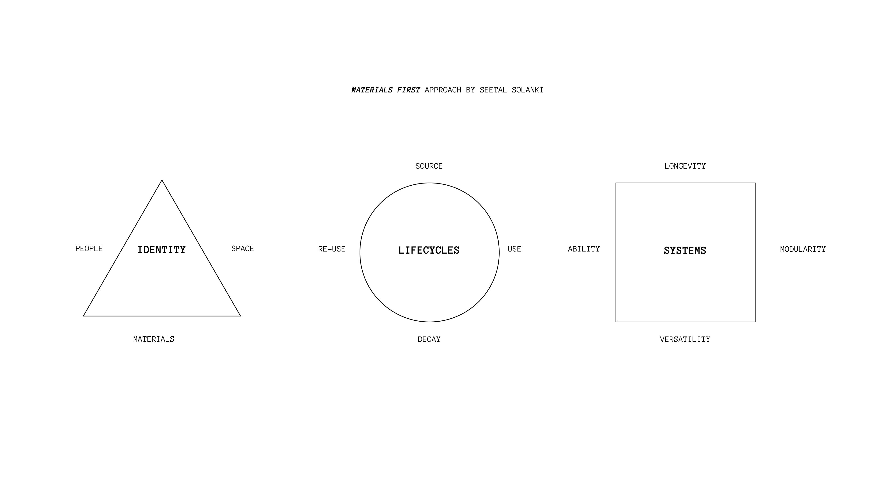
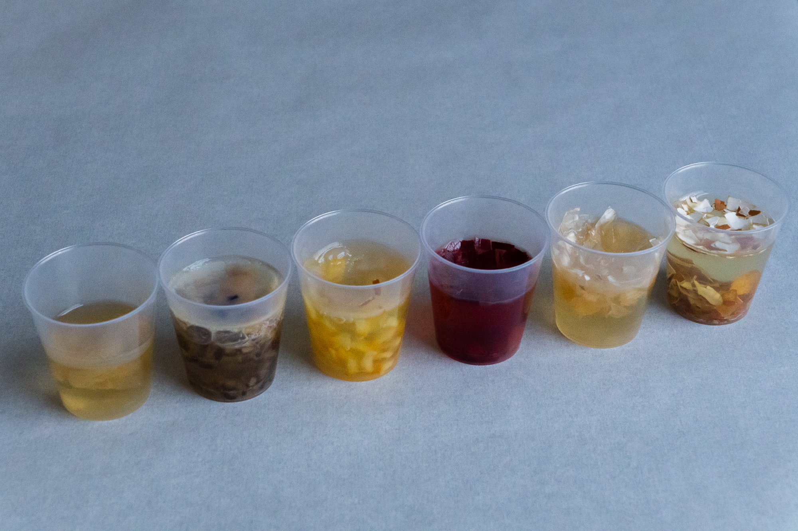
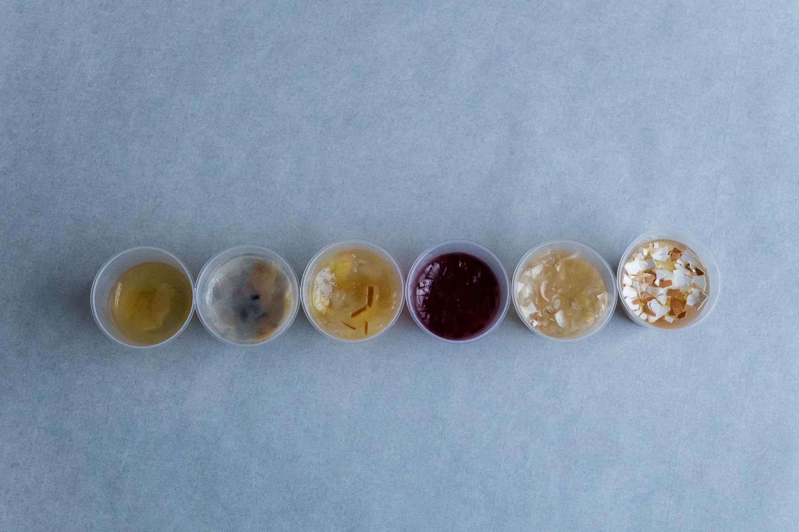
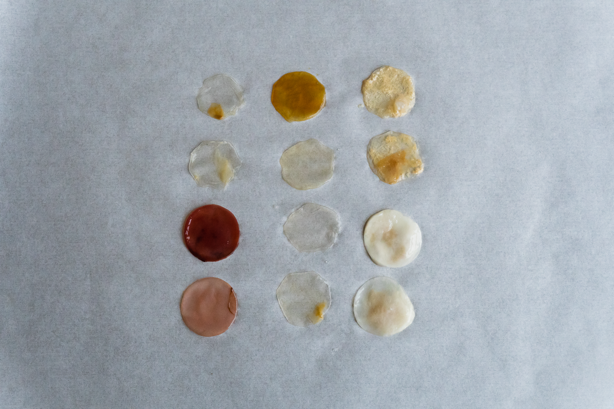
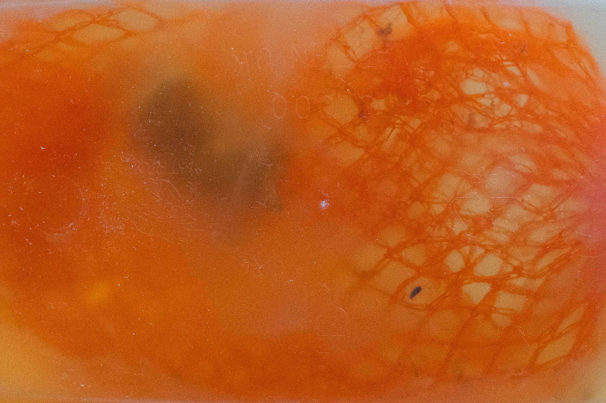
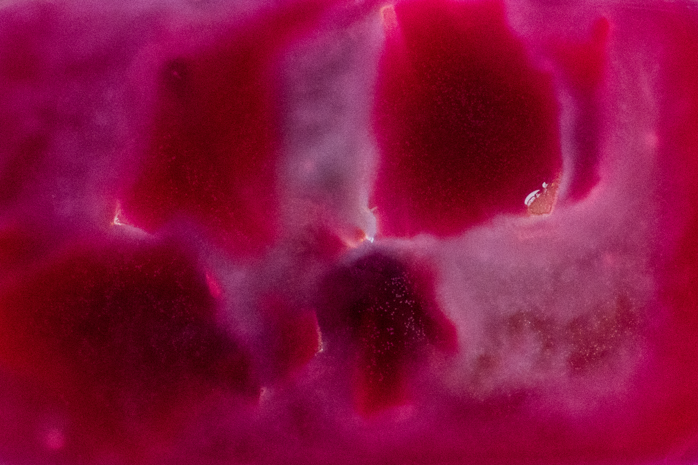
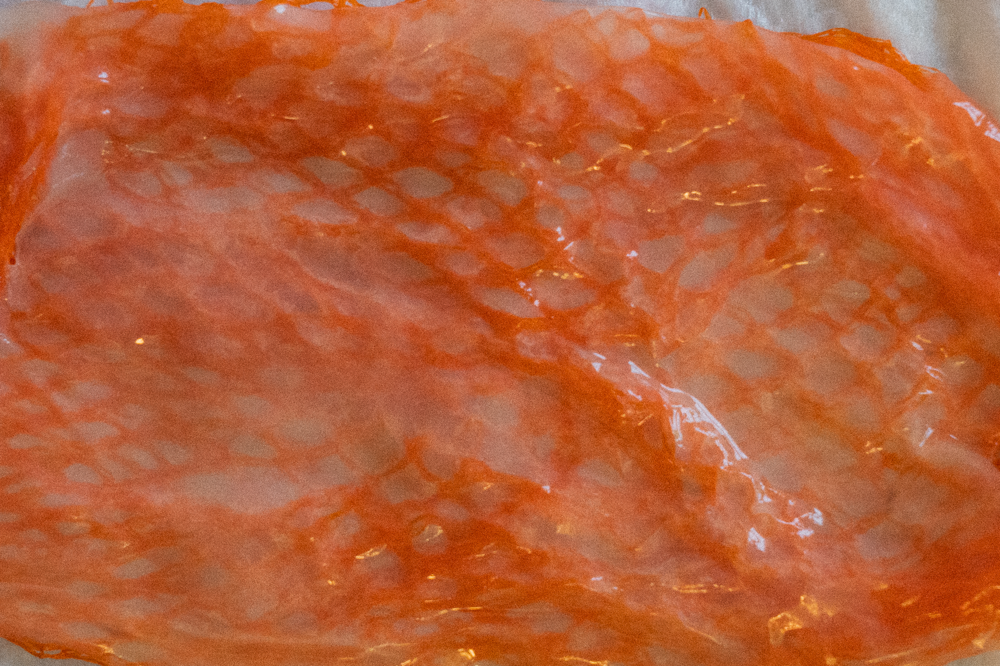
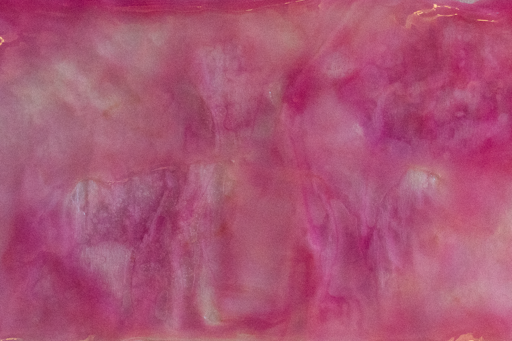
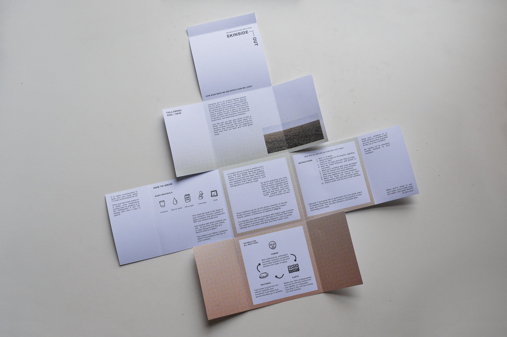
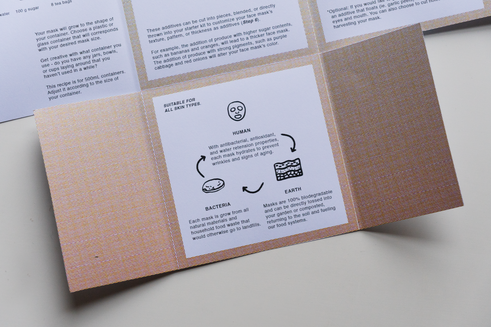

How can we care for both our skin and our planet's skin at the same time?
Skinside Out began with a materials-first approach: assessing bacterial cellulose (SCOBY) for its identity, lifecycle, and system potential before asking what it could become. This combined Seetal Solanki's materials-first methodology with a traditional double diamond design process.
SCOBY — the symbiotic culture of bacteria and yeast used to ferment kombucha — produces a flexible, skin-compatible membrane that can be grown in weeks from food waste. Its properties make it a natural candidate for sheet masks: hydrating, biodegradable, and customizable to different skin needs.


SCOBY lifecycle: from food waste to skin-compatible membrane.
Three weeks of material experiments.
Each week focused on a different variable, building understanding of what SCOBY could and couldn't do:
Fruit & Vegetable Peels
Testing visual variation through different peel types. Onion skin lacked sufficient sugar content; eggshells caused breakage during drying.
Durability Enhancement
Growing SCOBY with embedded nets and purple cabbage. Successful pattern formation occurred as cabbage dyes bled into the material during growth.
Household Additives
Testing red wine, nettle, oat milk, and kefir. Pre-fermented additives increased growth speed and created a glossy, skin-smooth texture.







A home toolkit for growing personalized sheet masks.
Sheet masks were selected to maximize the use of SCOBY's natural properties — its membrane structure, moisture retention, and skin compatibility. The Skinside Out toolkit provides everything needed to cultivate, harvest, and apply a SCOBY sheet mask at home, drawing on ancient fallowing soil techniques to encourage a cyclical, restorative relationship with materials.
The design incorporates pause and patience into the ritual — growing a mask takes weeks, which reframes skincare as a relationship rather than a transaction.


Inspiring people to understand where their products come from.
Skinside Out's goal was to inspire people to understand where their products come from and the labor it takes to create them — drawing similarities between ourselves and the environment to foster a better relationship with both.
The project extended earlier material research from Vleur, where bacterial cellulose fermentation was explored as part of a food waste upcycling device. Skinside Out developed this strand as a standalone body of work focused on biological material design and behavioral change through making.